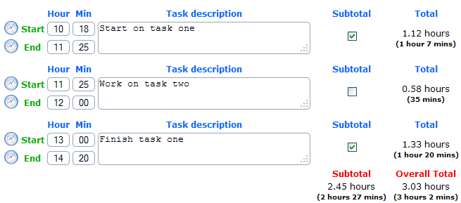
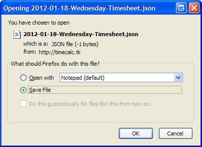
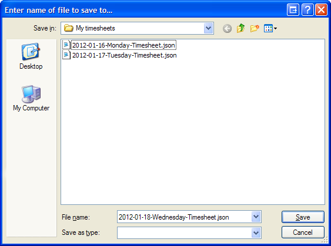

The website is a simple tool to easily calculate your total hours worked each day which can then be copied
into your company's timesheet system. You enter in your start time, the details about the task you are doing
and the end time when you finish the task. The page will then calculate how many hours this task took.
Multiple tasks can be entered throughout the day and it will total up the day's work. Basically it saves you
time doing mental math to work out how many hours you need to put down for each task. It is useful for
consultancy based companies who have to bill by the hour to various projects throughout the week.
If you work on the same task at different times of the day you can click the subtotal checkbox next to
each task so they are grouped together. When you click the Calculate and save button it will total
up the time spent on those tasks and show it at the bottom of the page. For example:

You should backup the timesheet every day and save it to a file on your hard drive. That way you can
restore and view previous timesheets if you need to. Click the Download button to save the
timesheet to your hard drive. For example:


Restoring is as simple as choosing the file you want to restore and opening it.
Technical informationThe site uses the latest technologies in HTML5 and jQuery. Data is saved locally in each user's browser using HTML 5 local storage. The website is also saved into HTML5 offline application cache so that the page can be loaded instantly from the browser cache rather from the server each time. It is expected the page will be reloaded multiple times each day and week so there's no need to download the website each time from the server.
Due to the new technologies being used the only current supported browsers are the latest versions of Firefox, Chrome, Safari or Opera. Internet Explorer 9 may also work but is untested at this time.
Source codeThe source code is released under the MIT licence and free to use or modify for commercial purposes.